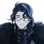

The Eleven Fatui Harbingers are the executive heads of the Fatui who have been given god-like authority by the Tsaritsa, and with it, strength surpassing that of other mortals. They also have had their abilities boosted with the Delusions granted to them by the Tsaritsa, which makes them far more powerful than normal allogenes. Each Harbinger leads their own division within the Fatui. Currently, the Harbingers' collective mission is to obtain the other six Gnoses.
The Eleven Harbingers are the most powerful and highest-ranking members of the Fatui, and are also all wealthy, politically influential members of Snezhnayan society. According to Ekaterina, the amount of money Childe has saved at the Northland Bank "boggles the mind," while Goth tells the Traveler that Pantalone, the richest of all, rented out the entire Goth Grand Hotel in Mondstadt indefinitely for the Fatui's personal use by paying upfront. Due to Childe's status as a Harbinger, the Fatui diplomats handling the aftermath of his summoning of Osial were unable to resolve the situation by handing him over to the Liyue Qixing; the Northland Bank instead had to pay heavy reparations.
Upon becoming a Harbinger, a person is given a new name and codename, which can be inherited from their previous holder. They are also assigned a ranking number, which is based both on the individual's power and their overall contribution to the Tsaritsa's cause in comparison to the other members. The top-ranked Harbingers, up to No. 3 (Columbina), possess powers which can rival the gods, and their powers are stronger than the Traveler's, up to No. 4 (Arlecchino).
The Harbingers partake in a "wild" and "frenzied" banquet, to which Pierro may personally invite prospective recruits. Further information about this banquet, whether its meaning is literal or figurative, is not known.
The Harbingers frequently use each other for their own ends and are more than willing to cut loose those who are deemed to have lost their value, as shown when Dottore abandoned Scaramouche after he acquired both the Dendro and Electro Gnoses from Nahida. The Harbingers' disparate methodologies and motivations lead to frequent internal squabbling, as well as a mutual lack of respect or trust among a number of its members. According to Capitano, the reason each Harbinger's methods can be so radically different despite sharing the same goal and leader is because the Tsaritsa allows them the freedom to "pursue the meaning of their existence." When the time comes, that freedom can take precedence over her orders.
This internal discord was notably shown during Signora's funeral — the first gathering of all the Harbingers in a long time — where there were small arguments between several Harbingers before Pierro ordered them to stop their "foolish theatrics." Signora also showed little respect towards Childe and Scaramouche, both of whom had the same sentiment towards her. Later on, the Traveler observed Arlecchino and Childe casually trash-talking the other Harbingers behind their backs, and Arlecchino admits that if Dottore wasn't a Harbinger, she would have killed him long ago. Arlecchino and the House of the Hearth also deduce that Pulcinella and Pantalone's decision to put them in the spotlight for Project Stuzha was also meant as a way to control them.
Pantalone is known to work closely with both Pulcinella and Dottore. Dottore also worked with the previous Knave Crucabena, and later made a proposal for a secret experiment with Arlecchino, although his involvement was minimal.
Most rank-and-file Fatui members hold respect for their commanding Fatui Harbinger, expressing a deep attachment to the Harbinger they are under to the point of taking matters into their own hands to curry favor from them, acting in what they believe are in their Harbinger's best interests, or exacting revenge if the Harbinger they were the direct subordinates of was killed. Those who were loyal to a Harbinger that was replaced may also continue to pursue said Harbinger's goals.
| Name | Codename | Image | Rank |
|---|---|---|---|
| Pierro | "The Jester" (丑角) | Director | |
| Il Capitano | "The Captain" (队长) | 1 | |
| Il Dottore | "The Doctor" (博士) | 2 | |
| Columbina | "Damselette" (少女) | 3 | |
| Arlecchino | "The Knave" (仆人) | 4 | |
| Pulcinella | "The Rooster" (公鸡) | 5 | |
| Previously Scaramouche | Resigned | Resigned | 6 |
| Sandrone | "Marionette" (木偶) | 7 | |
| Previously La Signora | Dead | Dead | 8 |
| Pantalone | "Regrator" (富人) |  | 9 |
| Tartaglia | "Childe" (公子) | 11 |